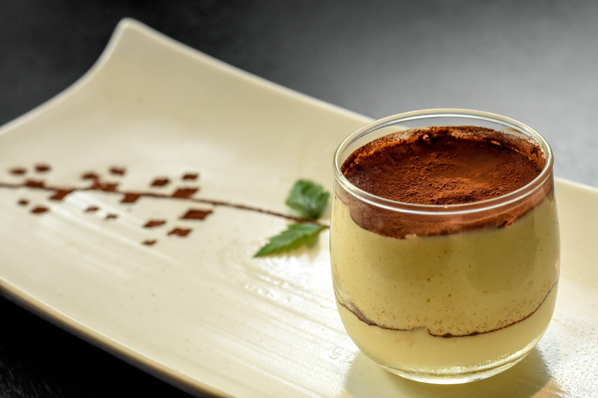

Home
Tiramisu

Description
Tiramisu is an Italian dessert made with coffee-soaked ladyfingers
covered with a cream of egg yolks, sugar, mascarpone, and
cocoa powder.
Ingredients
- 6 egg yolks
- 1 ¼ cups white sugar
- 1 ¼ cups mascarpone cheese
- 1 ¾ cups heavy whipping cream
- 2 packages ladyfingers
- ⅓ cup coffee flavored liqueur
- 1 teaspoon unsweetened cocoa powder, for dusting
- 1 square semisweet chocolate
Steps
- Gather all ingredients.
-
Combine egg yolks and sugar in the top of a double
boiler, over boiling water. Reduce heat to low, and cook for about 10
minutes, stirring constantly. Remove from heat and whip yolks until
thick and lemon-colored.
-
Add mascarpone to whipped yolks. Beat until combined.
-
Whip cream to stiff peaks in a separate bowl. Gently
fold into yolk mixture and set aside.
-
Split the lady fingers in half, and line the bottom and
sides of a large glass bowl. Brush with coffee liqueur.
-
Spoon half of the cream filling over the lady fingers.
-
Repeat ladyfingers, coffee liqueur and filling layers.
-
Garnish with cocoa and chocolate curls. Refrigerate
several hours or overnight. Enjoy!
- Enjoy!